woodstove installation

Why a wood stove?
It was our dream to have a little wood stove aboard Pino. After researching stoves, we decided that the best model was the cast iron Sardine from Navigator Stoveworks.
Our Espar diesel heater broke on our last passage, and we decided not to replace it. There are few low-power alternatives to a gas/diesel heater for heating a boat when off the grid. A wood stove was our best low-tech option. We also like that it doubles as a cook top.
Planning the installation
A stove needs a lot of room, but we were prepared to make room for it. In the end, we didn't have to sacrifice too much. We found a spot for it on the port side settee, over our main water tank.
When planning the install, we made a rough model of the stove with wood to figure out how to align the flue to the ceiling. We followed the guidelines recommended by our stove builder. All stoves are different, always refer to the builder when planning an install.
We built a sturdy platform to support the stove, because we not bolt it directly to the water tank underneath. Also, we wanted to elevate it to keep access to two deck plates on top of the tank. We also could not press it up against either wall, because one was storage for our fold-away table, and the other housed a small locker, which gives us access to chain plate bolts.
With these limitations in mind, we planned our installation.
The lost locker
The locker door was on hinges, so we removed them and instead built slides out of wood, and a wooden handle. We can easily reach and slide the door in, or out, from the side. It is not easy to store items there anymore, but that's okay, our main goal is to keep hand access to the chain plate bolts.
The pltform
We built a platform out of pine. We are lucky to have a hardware store nearby that can do cuttings on-site with a bench saw. We don't have access to such tools, and it is hard to make straight, precise cuts without it. They cut a 1.27 cm (1/2 in) groove in 3 planks for the platform floor to slide into. We added screws to hold the walls and floor together.
Pine is very light, so we stained it with coffee to match it with the rest of the woodwork. We'd read of hobbyists using coffee as a stain. It is cheap, and doesn't stink. We added a layer of epoxy resin to seal the wood and stain to protect it from moisture (and to deter insects).
The floor of the platform was later re-enforced with a length of teak. The platform leaves room for a drawer underneath, where we can store tools or stove accessories, while giving access to the water tank. We secured the platform to the port-side wall with two long hex bolts, with oversized washers and lock nuts. The other side is secured by tension with ropes (sounds weird, but it works).
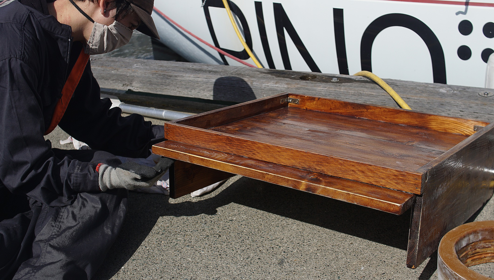Wall shielding
Shielding is important on a boat due to the fact that most boat building materials or finishes located near the stove will not have a Flame Spread Index of 75 or less. A shield will protect combustible materials in the vicinity of the stove.
The most effective heat shields are the air-cooled type, separated by a thick sheet of stainless steel with 2.54 cm (1 in) or more of air space behind the metal sheet and around the edges to allow air to flow. A proper air-cooled heat shield reduces clearances by up to two thirds.
Our stove builder recommends making a composite panel, mounting a sheet of mineral fibre board behind it to further reduce clearances. Because we exceed the minimum air space requirements, we did not add one.
We found some stainless steel sheeting and shelving at a scrap yard—these items were likely salvaged from a restaurant. The shelf had a bent edge, which was perfect to make a shield with (makes for a nicer finish). We didn't have access to a place that could bend sheets of metal for us, so we were glad to skip that step. We cut the shelf in half using a grinder, and sanded the edges (because they are sharp).
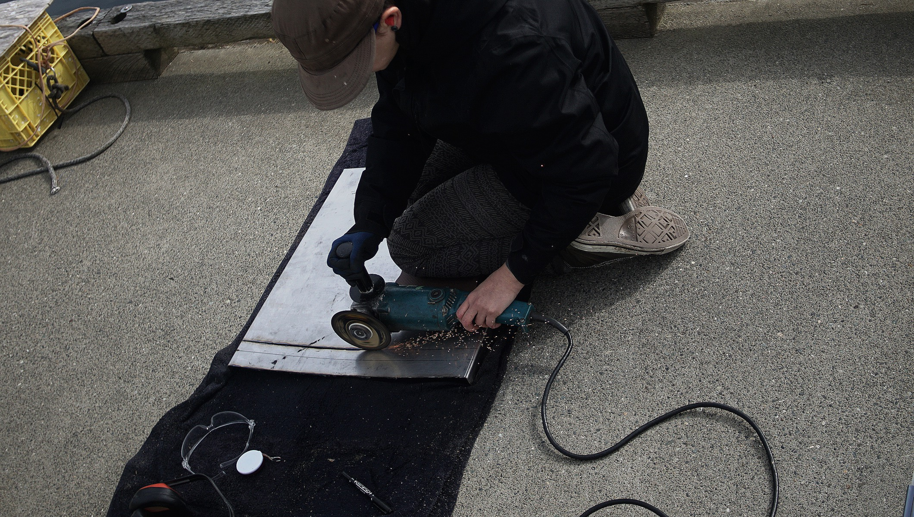We used a lot of cobalt drill bits to make holes in the shield. Drilling through stainless steel is difficult, and long. The key is to go slow, hard, and to use plenty of lubrication. The sound is also hard on the ears, we wore both protective eyewear and ear plugs when doing the work.
We secured the corners of the shield together with bolts (3 in all). We also drilled holes at the top corners of the wall shield to secure it to the wall.
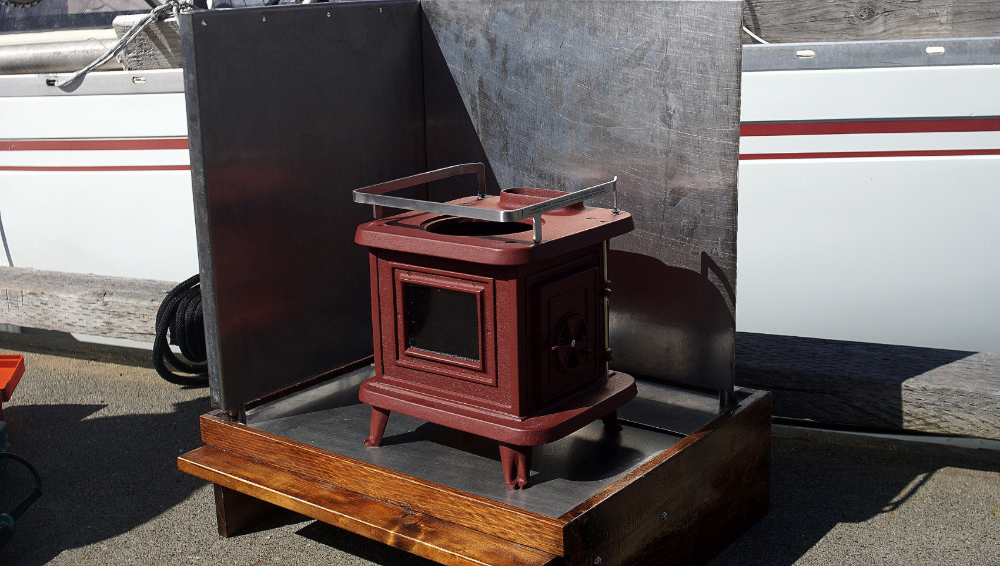Our dock neighbor donated some short lengths of stainless steel piping that we cut down to 2.54 cm (1 inch) to use as vertical spacers for the wall shield, to allow air to circulate. Our wall shield was then mounted on the platform, and attached to the port-side wall with 2 beefy hex bolts, oversized washers and lock nuts.
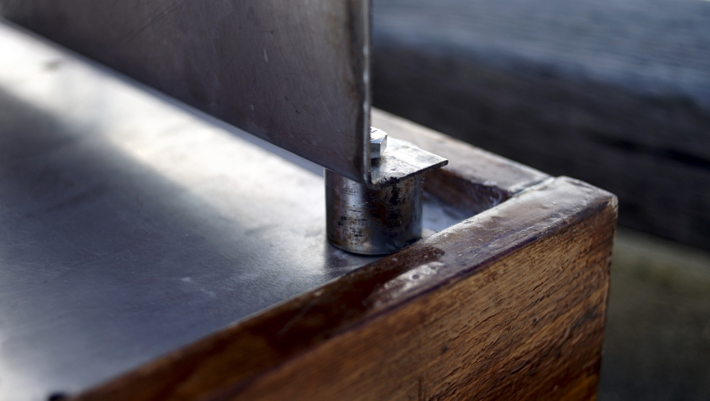Floor protection
Our stove requires a non-combustible protection layer with a minimum R-value of R2 (thermal resistance). With K values (measure of heat conductivity), the lower value is a better insulator. With R Values, the highest number is better.
To protect our wooden platform, we bought a 13x1219x609 mm (0.5x48x24 in) sheet of Micore 300. Micore 300 is mineral fibre board with an R value of 2.06 per 26 mm (1 in), so 2 layers meets the specifications for our stove.
Sourcing this material was not easy. Fireplace stores make floor pads with it but rarely sell raw sheets of the material. We found a distributor online (Concorde distributing), and they were able to direct us to a place where we could buy it locally. Our friends drove us to Saanichton to Pacific Fireplaces to get it. We wanted this material because it is thin, light, with a good R value per thickness. Our other option was layering sheets of heavy, X-rated gypsum, but we would have had to layer almost 76 mm (3 in) to get a value of R2—not ideal.
We cut the Micore 300 with a utility knife, layered over plywood. Micore is brittle, you can snap/break it to complete a cut but to have sharp edges, we recommend cutting all the way through to the plywood. Micore is made with silica, so we wore gloves and cut it while outside, careful not to breath any dust.
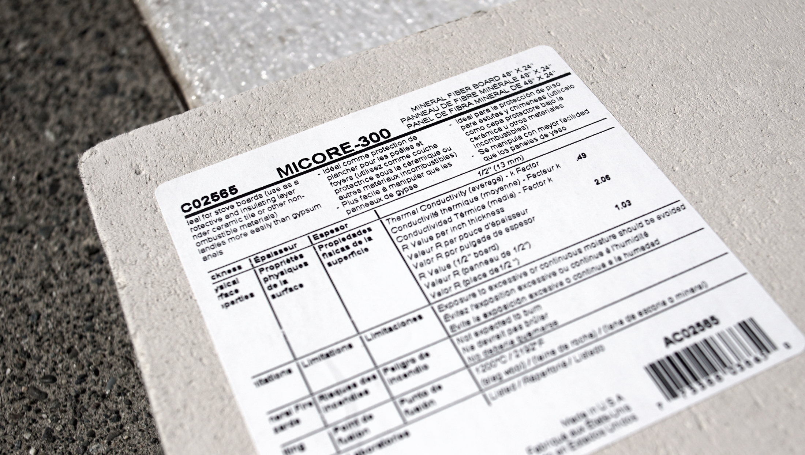To reflect heat and to protect the Micore, we placed a sheet of stainless steel over top.
We secured the wall shield to the base with hex bolts (through a spacer, a ss sheet, 2 layers of micore and the wood), oversized washers and lock nuts. The vertical spacers provide stability. The through-bolts for the stove legs are also secured with heavy hex bolts, and corresponding washers and nuts.
Chimney pipe
We bought 10 cm (4 in) Dickinson stainless steel stove pipes: two 45-degree elbows, and two 60 cm (24 inch) long straight pipes.
We chose single-wall stove pipes, instead of insulated. The water deck iron (see below) does a good job of keeping the pipe cool.
We cut the pipes to size using our grinder, and secured each connection together with 3 sheet metal screws. We made small leading holes with a cobalt bit first to make it easier, then used our hand drill to secure them, careful not to over tighten them.
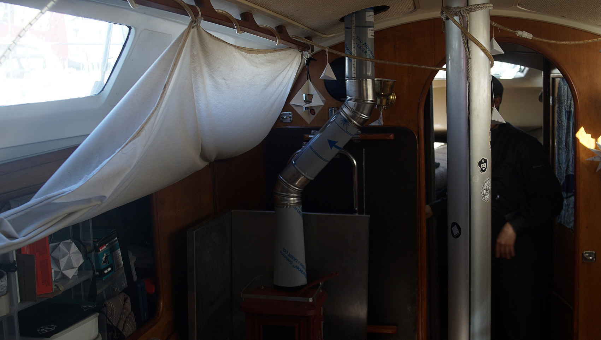Flue damper
We installed a flue damper in the pipe to control draft. It was difficult to slide into the space. The stove builder recommend that the damper be placed roughly 76 cm (30 in) above the cook surface.
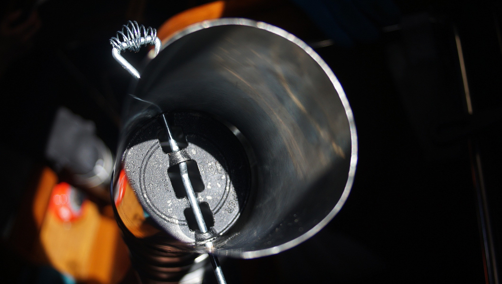Our stove has an oval collar, so we hand formed the pipe to fit it. Then, we used high-temp stove cement to connect the chimney pipe to the collar, gooping up the inside of the pipe. We let it set for a day.
We have plans to add shielding to the pipe itself as it nears the ceiling. The stove pipe will never get too hot because of the water deck iron. This traditional fitting contains water in a through which surrounds and cools the chimney pipe as it passes through the deck.
Deck ring
Built a ring so the pipe comes out vertically, and so that the water deck iron is level with the deck. Pino's cabin top has a very gradual curve.
We cut a hole in the deck using a jigsaw. To make sure the hole was aligned with the interior pipe, we drilled a small leading hole first. We measured correctly, the leading hole was perfectly aligned inside. We taped a bag inside to catch some of the dust, then proceeding to drilling additional holes on the edges so we could run the jigsaw blade. Then, came time to cut a big gaping hole on Pino's deck—scary!
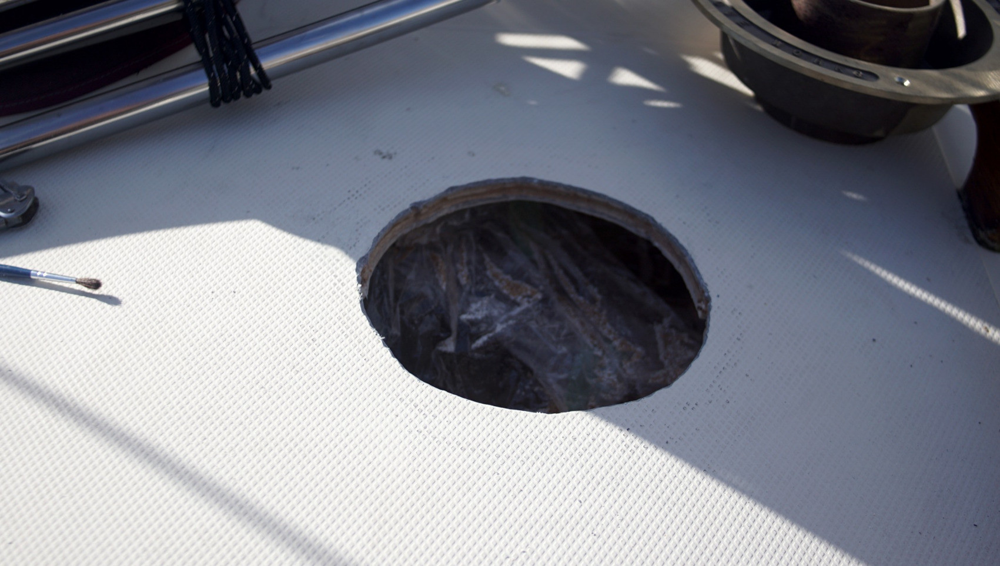We put a rope through the hole with a knot on the inside, and attached the bitter end to a point on deck to keep the core from falling inside.
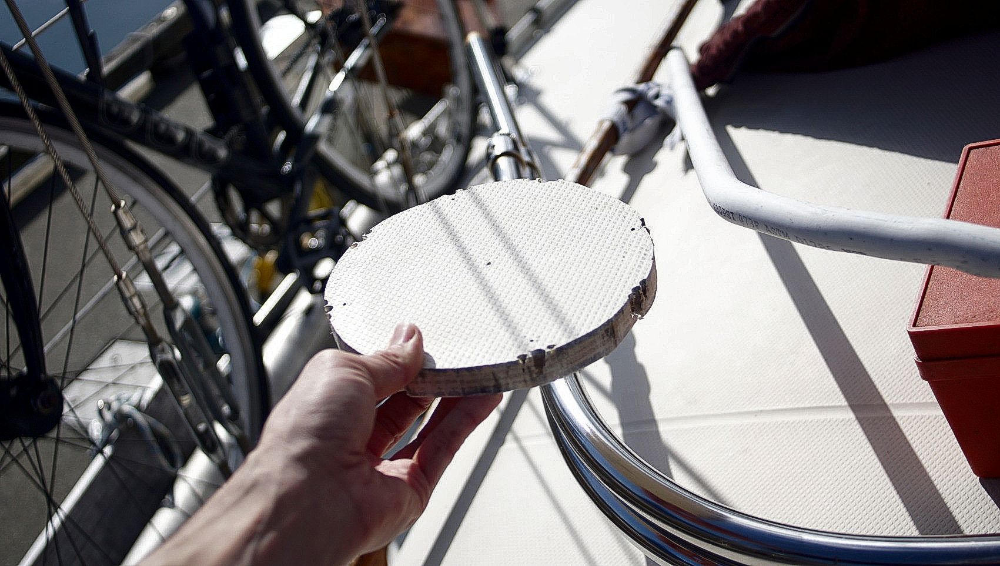Pino's got a thick, thick core...
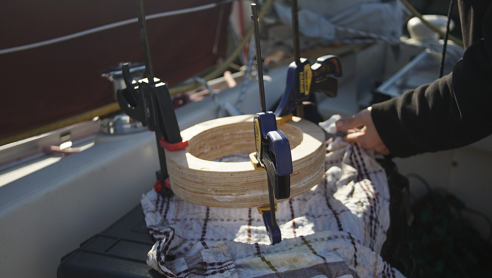 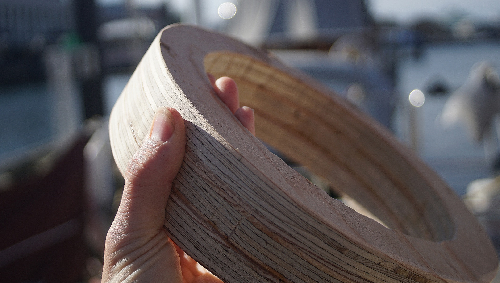We cut the ring at an angle with a jigsaw to level out the deck iron, and fibreglassed it to the deck. We painted the ring so it would match Pino's gel coat color.
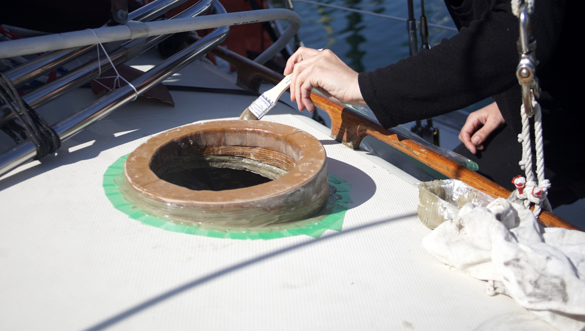Water deck iron
The last step was to secure the brass deck iron to the deck.
We glued some thin rubber spacers on the top of the ring, so that the deck iron sits on a good layer of high-heat silicone (a warning, that stuff STINKS). Without the spacers, most of the silicone would come gushing out. Then, we taped the outside of the ring to make ensure a clean edge for the silicone.
We layered some silicone on the top of the ring, and laid the deck iron over top, careful to insert it in the stove pipe and to align it with the holes that we previously drilled on the top of the ring. Then, we fastened it down with some brass screws, and removed the excess stinky silicone.
We have plans to add some screws inside too, to further secure the ring to the deck. We don't feel it is necessary to have through-bolts.

Smoke head
Pino looks great with the stainless steel smoke head! We won't be sailing with it on deck, we'll swap it out with a rubber bung while underway. The last thing we want is for a line to get caught in it and to send it flying overboard.
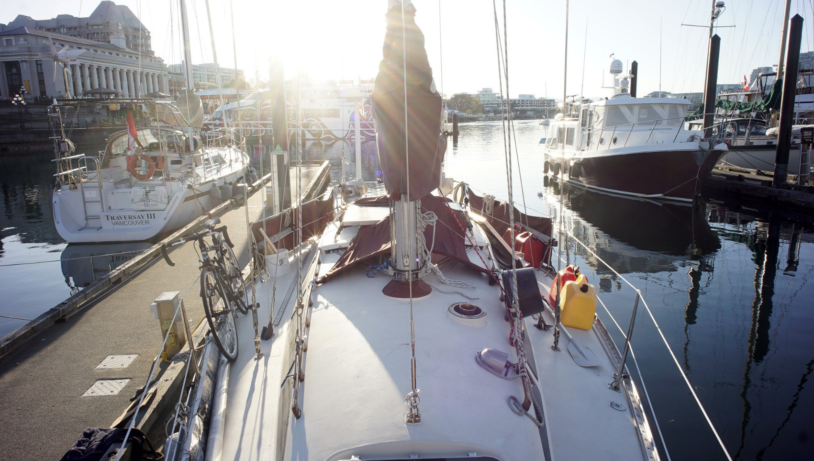Voila! We finished most of the install on April 20th 2021. We still have some small modifications to make to our setup, but it is mostly done—just in time for summer (haha).
We also got a little EcoFan by Caframo. The fan helps to distribute heat throughout the space, helps save up to 10% of fuel, and doesn't use any power! The EcoFan is a little fan powered by a single TEG mat in between a diffuser and a support leg. It's powered by thermoelectricity. It's such a neat idea. We're hoping to experiment with these little mats to see if we can capture an amp or two from the wood stove.
It is difficult to find stove tools sized for a boat, but luckily, Cubic Mini has a great miniature set (CB-3010). We also purchaed the EcoFan there, since they were the only store stocking the smaller model (CB-800CAXBX, original).